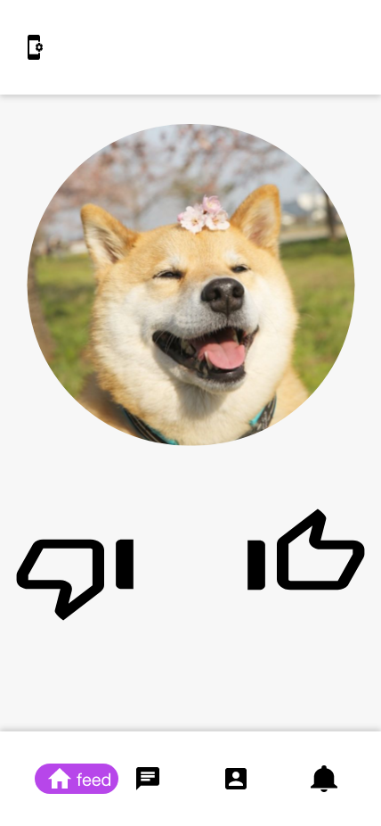
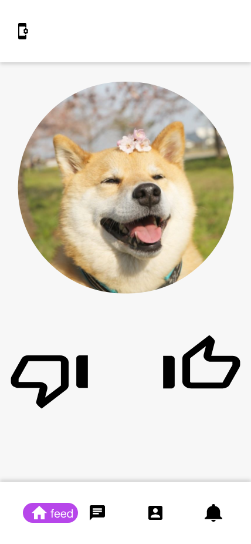

En kort animation lavet i frame-by-frame i Illustrator.
Dette er en mere kompleks animation lavet i Adobe Animate og Photoshop. Animationen indeholder både frame-by-frame animation samt motion-tweens.


Ovenover ses der styletile, wireframe og mock-up af denne hjemmeside. Alt sammen noget, der er udarbejdet i forbindelse med konstrueringen af denne side.
Alle elementer er udarbejdet før kodningen af hjemmesiden starter for at give et klart overblik over de designelementer siden skal indeholde og bygges op omkring.
 



Ovenover ses der en mock-up af en "dating-app", hvor meningen er, at man skal matche med den hund, der er vist. Mock-up'en kan testes her
Her ses 2 logoer, der er lavet til denne side. Det første logos formål er blikfang og er lavet til at være det første, der skal ses på siden. Det andet logo er lavet som et logo, der hører til i en navigationsbar.
Logoet til venstre er lavet til en hundeopdrætter. Logoet er udarbejdet i både Adobe Illustrator og Photoshop